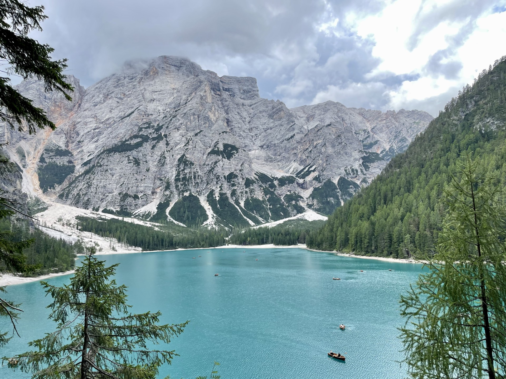
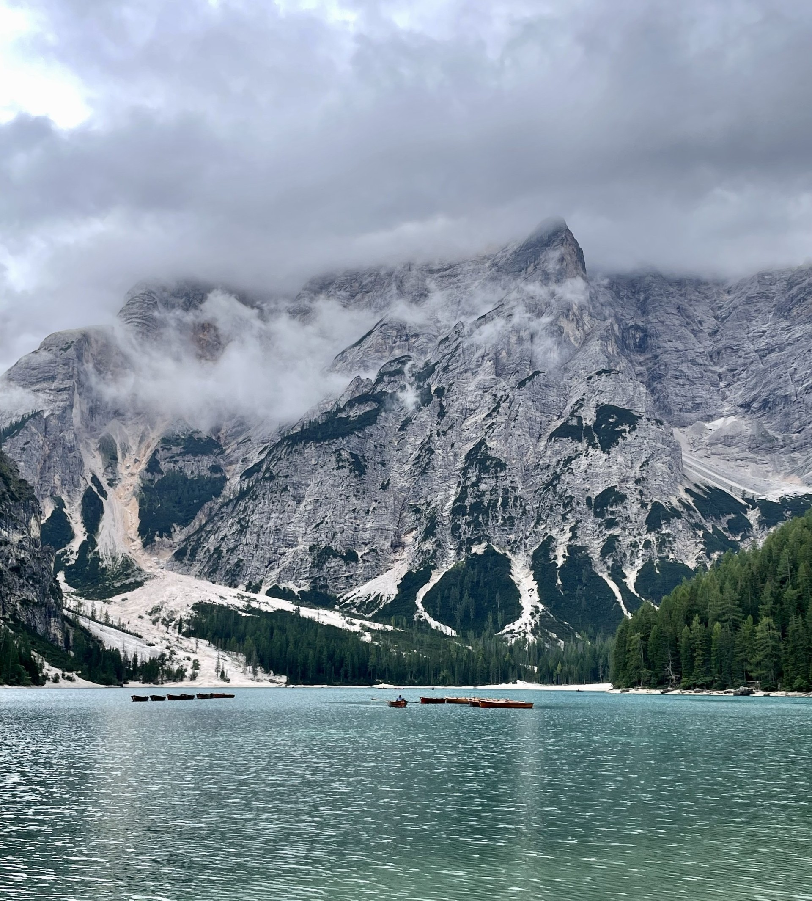

The Pearl of the Dolomites
LAGO DI BRAIES · SOUTH TYROL · ITALY
Hidden beneath the towering limestone walls of the Dolomites, Lago di Braies is one of the most iconic alpine lakes in Europe. Known for its emerald waters, traditional wooden boats and dramatic mountain backdrop, it has become a symbol of the Italian Alps and one of the most photographed locations in the region.
Situated in the heart of South Tyrol, the lake combines natural beauty with a remarkable sense of tranquility. Even on cloudy days, when mist drifts across the peaks and sunlight struggles to break through, the landscape feels almost cinematic.
During my visit, low clouds covered the surrounding summits while calm water reflected the towering walls above. The changing weather transformed the lake into a place that felt both powerful and peaceful at the same time.
{kind=link}

A Lake Born from the Mountains
Lago di Braies, known locally as Pragser Wildsee, was formed thousands of years ago when natural landslides blocked the valley and created a basin where water gradually accumulated. Today the lake sits at an elevation of nearly 1,500 metres, surrounded by some of the most dramatic peaks in the Dolomites.
Its characteristic turquoise colour comes from mineral-rich waters that flow down from the surrounding mountains. Depending on the weather and season, the lake can appear emerald green, deep blue or even silver beneath an overcast sky.
Although the lake itself is relatively small, its setting gives it an extraordinary presence. Massive cliffs rise directly from the shoreline, creating a landscape that feels far larger than the map suggests.
The Dolomites: Mountains of Stone
The Dolomites are among the most distinctive mountain ranges in Europe. Their pale limestone cliffs rise abruptly above forests and alpine valleys, creating landscapes unlike anywhere else on the continent.
More than 200 million years ago, this region lay beneath a tropical sea. Ancient coral reefs slowly accumulated layer upon layer before geological forces lifted them high into the sky. Today those former reefs form the spectacular peaks that dominate northern Italy.
Because of their geological significance and natural beauty, the Dolomites have been recognized as a UNESCO World Heritage Site and remain one of the most celebrated mountain regions in the world.

The Boats of Braies
Few images are as closely associated with Lago di Braies as its traditional wooden rowing boats. Resting quietly beside the shoreline, they have become one of the lake's most recognizable symbols and a favourite subject for photographers.
Their warm wooden tones contrast beautifully with the cool colours of the water and the grey limestone walls behind them. On calm mornings, the boats seem suspended between the reflections below and the mountains above.
While visitors often see them as a picturesque attraction, they also contribute to the timeless atmosphere that makes Lago di Braies feel different from many other alpine destinations.
When Clouds Meet the Dolomites
Many travellers hope to photograph Lago di Braies beneath bright blue skies, but changing weather often reveals the most atmospheric version of the landscape.
Clouds drifting across the mountain faces create a constantly changing scene. Peaks emerge and disappear within minutes, while patches of mist move across forests and rocky slopes.
During my visit, the mountains remained partially hidden throughout the day. Instead of vibrant colours and direct sunlight, the landscape was defined by texture, contrast and mood. The result felt wild, dramatic and unmistakably alpine.
In these conditions the lake becomes more than a postcard destination. It becomes a living landscape shaped by weather, light and time.
{kind=link}

The Pearl of the Dolomites
Lago di Braies has earned its nickname for good reason.
Its combination of crystal-clear water, towering mountains and remarkable scenery makes it one of the most beautiful lakes in Europe.
Yet what truly makes the place memorable is not simply its beauty. It is the feeling of standing beneath enormous limestone walls while clouds drift silently through the valley and reflections shimmer across the water.
For photographers it offers endless opportunities for composition. For travellers it provides a rare moment of stillness surrounded by one of the most spectacular mountain landscapes on Earth.
Whether seen on a calm summer morning, beneath autumn colours or under stormy skies, Lago di Braies captures the essence of the Dolomites in a single unforgettable scene.
Related Stories
Discover another side of the Dolomites in Cathedrals of Stone, a photographic journey through towering limestone peaks, alpine valleys and some of the most iconic landscapes in northern Italy.
Photo Notes
Location: Lago di Braies (Pragser Wildsee), South Tyrol, Italy
Elevation: 1,496 m
Mountain Range: Dolomites
UNESCO World Heritage Site
Category: Landscape Photography
Subject: Lago di Braies and the Dolomite Peaks
Camera & Gear: iPhone 12 · ND Filter
Photographer: Carles Torres